# Verificar, instalar y activar el paquete "tidyverse"if (!require(tidyverse)) {install.packages("tidyverse")}library(tidyverse)# Verificar, instalar y activar el paquete "kableExtra"if (!require(kableExtra)) {install.packages("kableExtra")}library(kableExtra)# Verificar, instalar y activar el paquete "readxl"if (!require(readxl)) {install.packages("readxl")}library(readxl)library(gridExtra)
2 . DISTRIBUCIÓN NORMAL
La distribución normal, también conocida como distribución gaussiana o campana de Gauss, es la distribución de probabilidad continua más importante en la estadística.
Su importancia radica en que muchos fenómenos naturales, sociales y económicos siguen este patrón.
La distribución normal es la distribución de probabilidad continua más usada en estadística y una herramienta fundamental para modelar una inmensa variedad de fenómenos en las ciencias, la ingeniería y la economía. Su popularidad se debe a una propiedad matemática conocida como el Teorema del Límite Central, que establece que la suma o el promedio de un gran número de variables aleatorias independientes (sin importar su distribución original) tiende a seguir una distribución normal.
Características Clave
La distribución normal es un tipo de distribución de probabilidad continua. Esto significa que la variable aleatoria puede tomar cualquier valor dentro de un rango determinado. Se representa por una curva simétrica en forma de campana, donde la mayor parte de los datos se agrupan alrededor del valor central.
Forma de Campana: La distribución es simétrica alrededor de su media, creando una curva con forma de campana. El punto más alto de la campana es la media.
Media, Mediana y Moda Coincidentes: En una distribución normal perfecta, estos tres valores son iguales y se encuentran en el centro de la curva.
Asintótica al Eje Horizontal: La curva se extiende indefinidamente en ambas direcciones, acercándose al eje x pero sin llegar a tocarlo.
Regla Empírica: Alrededor del 68% de los datos se encuentran dentro de una desviación estándar de la media (μ±σ), el 95% dentro de dos desviaciones estándar (μ±2σ), y el 99.7% dentro de tres desviaciones estándar (μ±3σ).
Parámetros
La distribución normal está completamente definida por dos parámetros:
Media (μ): Indica la ubicación del centro de la curva y el valor más probable.
Varianza σ2σ2 o Desviación Estándar (σ): Mide la dispersión o variabilidad de los datos. Una σ grande resulta en una curva más ancha y aplanada, mientras que una σ pequeña crea una curva más estrecha y alta.
Fórmulas
La fórmula principal de la distribución normal es la función de densidad de probabilidad (FDP). Esta función no calcula la probabilidad de un punto exacto, sino la densidad de probabilidad en ese punto.
e es el número de Euler (aproximadamente 2.71828).
π es la constante pi (aproximadamente 3.14159).
Para calcular probabilidades, se utiliza la distribución normal estándar, que tiene una media de 0 y una desviación estándar de 1. Cualquier variable normal puede estandarizarse usando la siguiente fórmula:
Fórmula de Estandarización (puntuación Z):
Z = \frac{x - \mu}{\sigma}
La puntuación Z nos dice cuántas desviaciones estándar está un valor dado de la media. Luego, se usan tablas o software estadístico para encontrar las probabilidades correspondientes.
2.1 EJERCICIOS
Ejercicio 1.1
Un investigador científico informa que unos ratones vivirán un promedio de 40 meses cuando sus dietas se restringen drásticamente y después se enriquecen con vitaminas y proteínas. Suponiendo que la vidas de tales ratones se distribuyen normalmente con una desviación estándar de 6.3 meses, encuentre la probabilidad de que un ratón dado vivirá:
media <-40desviacion_estandar <-6.3rango <-c(media -3* desviacion_estandar, media +3* desviacion_estandar)ggplot(data.frame(x = rango), aes(x = x)) +# Curva de la distribución normalstat_function(fun = dnorm, args =list(mean = media, sd = desviacion_estandar), n =500, color ="black") +# Resaltar el área de interés (X > 32)geom_area(stat ="function", fun = dnorm, args =list(mean = media, sd = desviacion_estandar),fill ="#FF5785", xlim =c(32, rango[2]), alpha =0.5) +# Etiquetas y títuloslabs( title ="Distribucion Normal", subtitle ="Probabilidad de vivir más de 32 meses", x ="Vida en meses", y ="Densidad de Probabilidad" ) +theme_bw() +# Línea para el valor de 32geom_vline(xintercept =32, linetype ="dashed", color ="#FF0000") +geom_text(aes(x =32, y =0.01, label ="32 meses"), hjust =-0.1, vjust =-1)
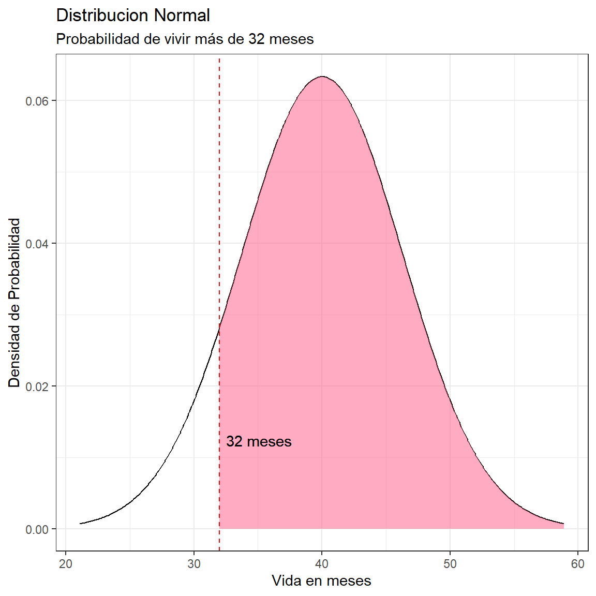
RTA: La probabilidad de que un ratón viva más de 32 meses es de 0.8979 (89.79%).
¿Cuál es la probabildad de que un ratón dado viva menos de 28 meses?.
media <-40desviacion_estandar <-6.3rango <-c(media -3* desviacion_estandar, media +3* desviacion_estandar)ggplot(data.frame(x = rango), aes(x = x)) +# Curva de la distribución normalstat_function(fun = dnorm, args =list(mean = media, sd = desviacion_estandar), n =500, color ="black") +# Resaltar el área de interés (X < 28)geom_area(stat ="function", fun = dnorm, args =list(mean = media, sd = desviacion_estandar),fill ="#FC6FD9", xlim =c(rango[1], 28), alpha =0.5) +# Etiquetas y títuloslabs( title ="Distribucion Normal", subtitle ="Probabilidad de vivir menos de 28 meses", x ="Vida en meses", y ="Densidad de Probabilidad" ) +theme_bw() +# Línea para el valor de 28geom_vline(xintercept =28, linetype ="dashed", color ="#FF0000") +geom_text(aes(x =28, y =0.01, label ="28 meses"), hjust =1.1, vjust =-1)
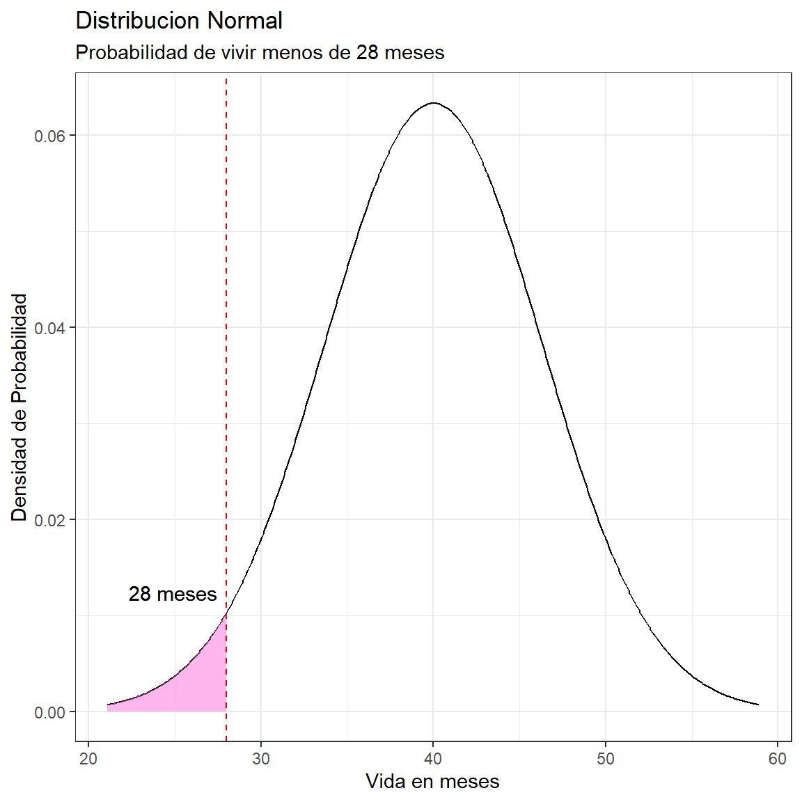
RTA: La probabilidad de que un ratón viva menos de 28 meses es de 0.0284 (2.84%)
¿Cuál es la probabilidad de que un ratón dado viva entre 37 y 49 meses?.
media <-40desviacion_estandar <-6.3rango <-c(media -3* desviacion_estandar, media +3* desviacion_estandar)ggplot(data.frame(x = rango), aes(x = x)) +# Curva de la distribución normalstat_function(fun = dnorm, args =list(mean = media, sd = desviacion_estandar), n =500, color ="black") +# Resaltar el área de interés (37 < X < 49)geom_area(stat ="function", fun = dnorm, args =list(mean = media, sd = desviacion_estandar),fill ="#6FFCFA", xlim =c(37, 49), alpha =0.5) +# Etiquetas y títuloslabs( title ="Distribucion Normal", subtitle ="Probabilidad de vivir entre 37 y 49 meses", x ="Vida en meses", y ="Densidad de Probabilidad" ) +theme_bw() +# Líneas para los valores de 37 y 49geom_vline(xintercept =37, linetype ="dashed", color ="#FF0000") +geom_vline(xintercept =49, linetype ="dashed", color ="#FF0000") +geom_text(aes(x =37, y =0.01, label ="37"), hjust =1.1, vjust =-1) +geom_text(aes(x =49, y =0.01, label ="49"), hjust =-0.1, vjust =-1)
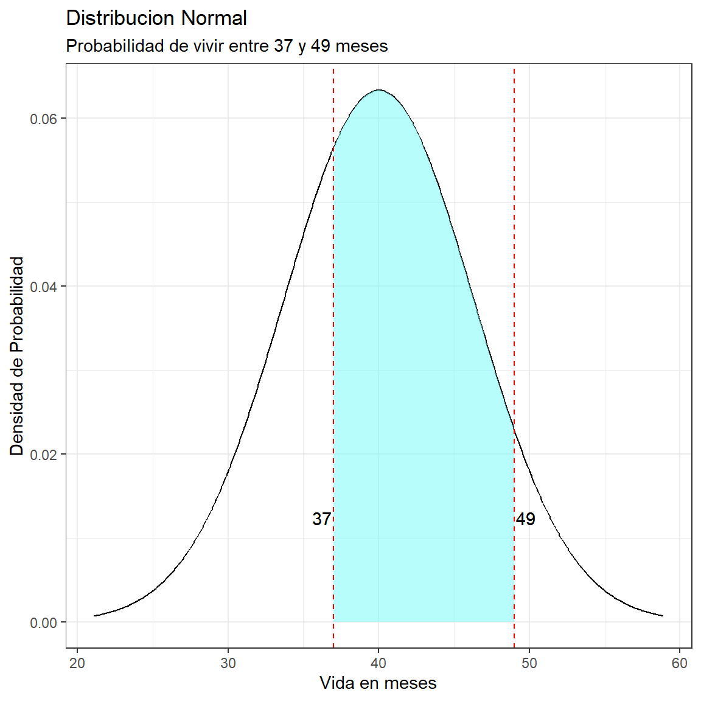
RTA: La probabilidad de que un ratón viva entre 37 y 49 meses es de 0.6065 (60.65%)
Ejercicio 1.2
Una máquina expendedora de bebidas gaseosas se regula para que sirva un promedio de 200 mililitros por vaso. Si la cantidad de bebida se distribuye normalmente con una desviación estándar igual a 15 mililitros,
¿qué fracción de los vasos contendrá más de 224 mililitros?
¿cuál es la probabilidad de que un vaso contenga entre 191 y 209 mililitros?
¿cuántos vasos probablemente se derramarán si se utilizan vasos de 230 mililitros para las siguientes 1000 bebidas?
rango <-c(media -3* desviacion_estandar, media +3* desviacion_estandar)ggplot(data.frame(x = rango), aes(x = x)) +stat_function(fun = dnorm, args =list(mean = media, sd = desviacion_estandar)) +geom_area(stat ="function", fun = dnorm, args =list(mean = media, sd = desviacion_estandar),fill ="#84FC6F", xlim =c(224, max(rango)), alpha =0.6) +labs( title ="Probabilidad de que un vaso contenga más de 224 ml", x ="Cantidad de bebida (ml)", y ="Densidad de probabilidad" ) +geom_vline(xintercept =224, linetype ="dashed", color ="#FF0000") +theme_minimal()
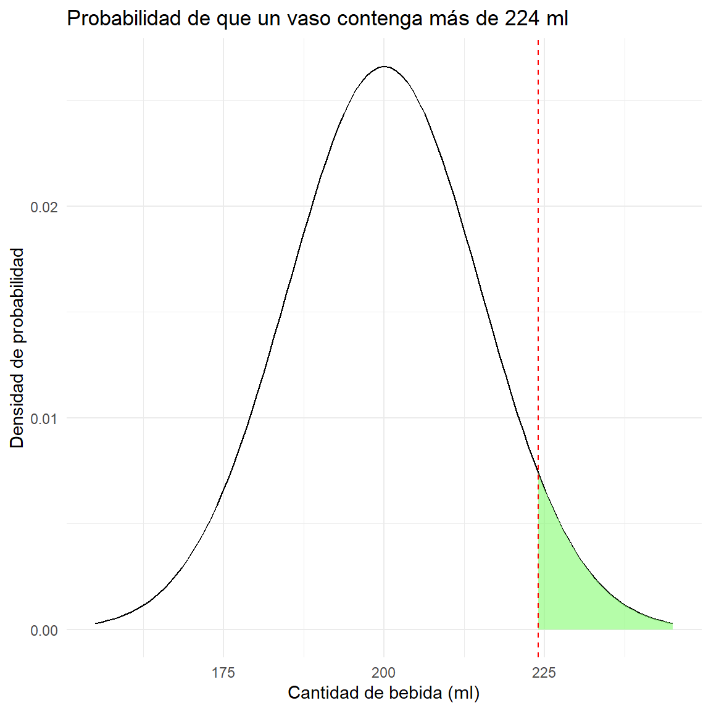
RTA: La probabilidad de que una fracción de vasos contengá mas de 224 ML es 0.0548 (54.8%)
¿ Cuál es la probabilidad de que un vaso contenga entre 191 y 209 ML?
Ver código
media <-200desviacion_estandar <-15prob_b_superior <-pnorm(209, mean = media, sd = desviacion_estandar)prob_b_inferior <-pnorm(191, mean = media, sd = desviacion_estandar)prob_b <- prob_b_superior - prob_b_inferiorcat("b)", round(prob_b, 4), "\n")
b) 0.4515
Grafíca
Ver código
rango <-c(media -3* desviacion_estandar, media +3* desviacion_estandar)ggplot(data.frame(x = rango), aes(x = x)) +stat_function(fun = dnorm, args =list(mean = media, sd = desviacion_estandar)) +geom_area(stat ="function", fun = dnorm, args =list(mean = media, sd = desviacion_estandar),fill ="#FF7575", xlim =c(191, 209), alpha =0.6) +labs( title ="Probabilidad de un vaso entre 191 ml y 209 ml", x ="Cantidad de bebida (ml)", y ="Densidad de probabilidad" ) +geom_vline(xintercept =191, linetype ="dashed", color ="#FF0000") +geom_vline(xintercept =209, linetype ="dashed", color ="#FF0000") +theme_minimal()
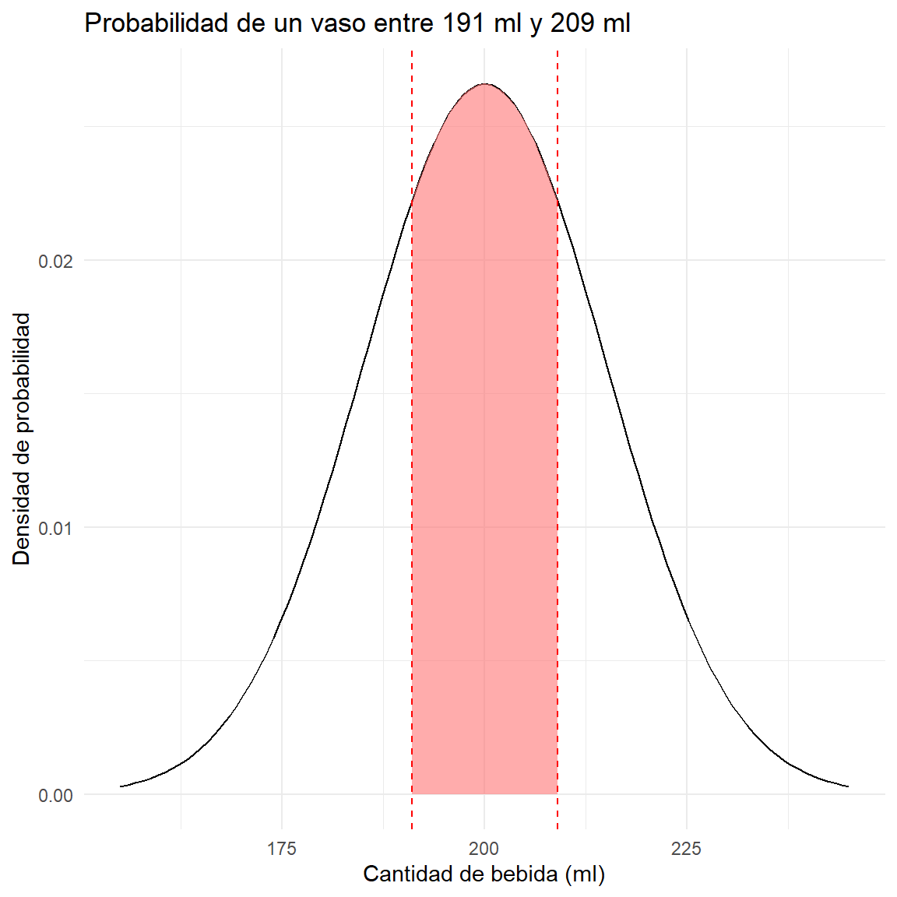
RTA: La probabilidad de que un vaso contenga entre 191 y 209 ML es de 0.4515 (45.15%)
¿Cuántos vasos probablemente se derramarán si se utiliza vasos de 230 ML para las siguientes 1.000 bebidas?
Ver código
media <-200desviacion_estandar <-15total_vasos <-1000prob_derramarse <-1-pnorm(230, mean = media, sd = desviacion_estandar)vasos_derramados <- prob_derramarse * total_vasoscat("c)", round(vasos_derramados), "vasos\n")
c) 23 vasos
Grafíca
Ver código
rango <-c(media -3* desviacion_estandar, media +3* desviacion_estandar)ggplot(data.frame(x = rango), aes(x = x)) +stat_function(fun = dnorm, args =list(mean = media, sd = desviacion_estandar)) +geom_area(stat ="function", fun = dnorm, args =list(mean = media, sd = desviacion_estandar),fill ="#7593FF", xlim =c(230, max(rango)), alpha =0.6) +labs( title ="Probabilidad de que un vaso se derrame", x ="Cantidad de bebida (ml)", y ="Densidad de probabilidad" ) +geom_vline(xintercept =230, linetype ="dashed", color ="#FF0000") +theme_minimal()
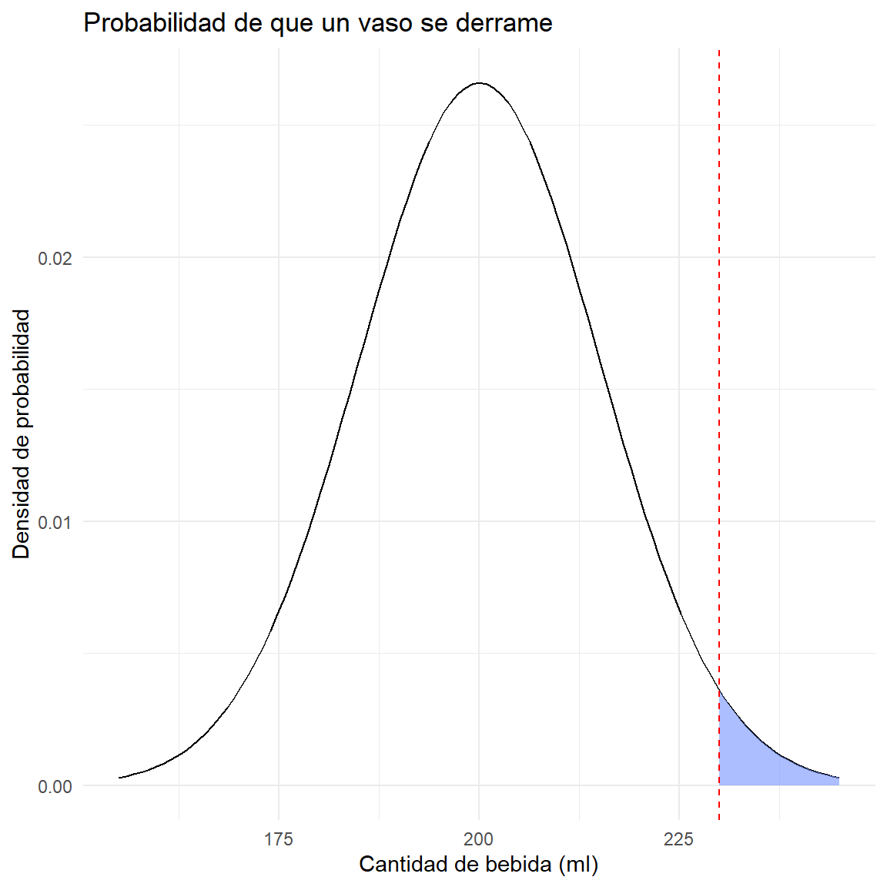
RTA: Si se utiliza vasos de 230 ML para las siguientes 1.000 bebidas probablemente se derramarán 23 vasos
Ejercicio 1.3 Un abogado viaja todos los días de su casa en los suburbios a su ofi cina en el centro de la ciudad. El tiempo promedio para un viaje sólo de ida es 24 minutos, con una desviación estándar de 3.8 minutos. Suponga que la distribución de los tiempos de viaje está distribuida normalmente.
¿Cuál es la probabilidad de que un viaje tome al menos 1/2 hora?
Si la oficina abre a las 9:00 A.M. y él sale diario de su casa a las 8:45 A.M., ¿qué porcentaje de las veces llegará tarde al trabajo?
Encuentre la longitud de tiempo por arriba de la cual encontramos e1 15% de los viajes más lentos.
Encuentre la probabilidad de que 2 de los siguientes 3 viajes tomen al menos 1/2 hora.
p_exito <-1-pnorm(30, mean =24, sd =3.8) n_viajes <-3exitos_deseados <-0:n_viajesprobabilidades <-dbinom(exitos_deseados, size = n_viajes, prob = p_exito)df_binomial <-data.frame( num_exitos =factor(exitos_deseados), prob = probabilidades)library(ggplot2)ggplot(df_binomial, aes(x = num_exitos, y = prob)) +geom_bar(stat ="identity", fill ="#7DC2FF") +geom_text(aes(label =round(prob, 4)), vjust =-0.5) +labs( title ="Distribución Binomial de viajes que tardan ≥ 30 minutos", subtitle ="La probabilidad de tener exactamente 2 'éxitos' es del 0.94%", x ="Número de viajes de al menos 30 minutos", y ="Probabilidad" ) +theme_minimal()
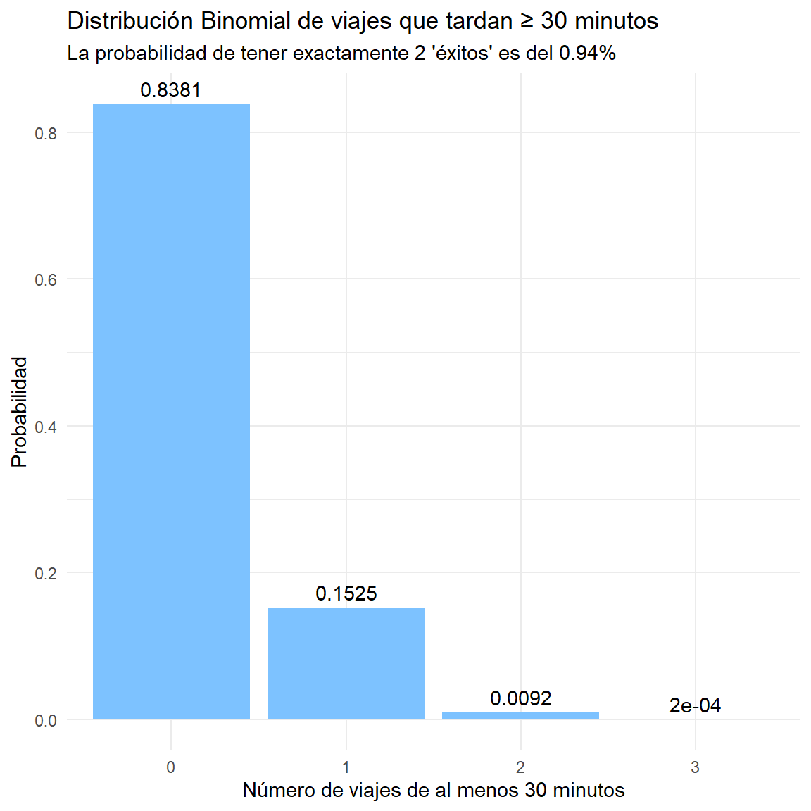
RTA: La probabilidad de que 2 de los 3 viajes tomen al menos 1/2 hora es de 0.0092 (0.92%).
3 . DISTRIBUCIÓN CHI CUADRADO
La distribución chi-cuadrado x^2 es una distribución de probabilidad continua definida solo para valores positivos, que surge de la suma de los cuadrados de variables normales estándar independientes, dependiendo de un parámetro llamado grados de libertad (𝑘). Su media es 𝑘, su varianza 2𝑘 y su forma varía según 𝑘: es muy asimétrica para valores pequeños y se aproxima a una normal al crecer. Su función de densidad se expresa mediante la función gamma, y es fundamental en estadística porque se utiliza en pruebas de hipótesis (bondad de ajuste e independencia en tablas de contingencia), en la construcción de intervalos de confianza para varianzas y en la base de otras distribuciones como la t de Student y la F de Fisher. En términos intuitivos, mide la dispersión total al sumar cuadrados de desviaciones de normales, por lo que resulta clave para analizar varianzas y asociaciones entre variables.
Parámetros y Características
A diferencia de la distribución normal, la distribución chi cuadrado no está definida por una media y una desviación estándar, sino por un único parámetro:
Grados de libertad (v o df): Este parámetro determina la forma de la distribución. A medida que los grados de libertad aumentan, la forma de la distribución se vuelve más simétrica y se aproxima a una distribución normal.
Valores No Negativos: La variable chi cuadrado x^2 solo puede tomar valores positivos, ya que se calcula a partir de la suma de cuadrados. Por lo tanto, su curva comienza en cero y se extiende hacia la derecha.
Asimétrica a la Derecha: La distribución es asimétrica con una cola larga hacia la derecha.
Media y Varianza: La media de la distribución es igual a los grados de libertad (μ=v), y la varianza es el doble de los grados de libertad (σ2=2v).
Dominio: 𝑋≥0 (nunca toma valores negativos).
Función de densidad de probabilidad
f(x; k) = \frac{1}{2^{\frac{k}{2}} \Gamma\left(\frac{k}{2}\right)} x^{\frac{k}{2} - 1} e^{-\frac{x}{2}}, \quad x > 0
Usos principales en la estadística
La x^2 es fundamental en estadística inferencial. Algunos de sus usos:
Pruebas de hipótesis:
Chi-cuadrado de bondad de ajuste: verificar si los datos observados se ajustan a una distribución teórica.
Chi-cuadrado de independencia: evaluar si dos variables categóricas son independientes en una tabla de contingencia.
Intervalos de confianza: para la varianza poblacional de una normal, ya que está relacionada con la suma de cuadrados de normales.
Modelos más complejos: forma parte de la familia de distribuciones asociadas a la F de Fisher y la t de Student, que también dependen de x^2.
Familias de Curvas Chi Cuadrado
Ver código
k_vals <-c(4, 5, 10)x <-seq(0, 40, length.out =1000)df <-data.frame()for (k in k_vals) { df <-rbind(df, data.frame( x = x, dens =dchisq(x, df = k), k =factor(k) ))}ggplot(df, aes(x = x, y = dens, color = k)) +geom_line(size =1.2) +labs( title ="Familia de curvas χ²", subtitle ="Densidades para distintos grados de libertad", x ="x",y ="Densidad", color ="Grados de libertad (k)" ) +theme_minimal(base_size =14)
library(ggplot2)# 1. Definición de valores críticos y funcióna <-qchisq(0.025, df =15, lower.tail =FALSE)b <-qchisq(0.01, df =7, lower.tail =FALSE)c <-qchisq(0.05, df =24, lower.tail =FALSE)grafico_chi <-function(df, alpha, critico, titulo){ x <-seq(0, critico + df*2, 0.1) dens <-dchisq(x, df) data <-data.frame(x = x, y = dens)ggplot(data, aes(x, y)) +geom_line(color ="#7DFFD2", linewidth =1.2) +geom_area(data =subset(data, x >= critico), aes(x, y), fill ="#27D67E", alpha =0.5) +geom_vline(xintercept = critico, linetype ="dashed", color ="red", linewidth =1) +labs(title = titulo, subtitle =paste("df =", df, ", α =", alpha, ", crítico =", round(critico, 2)), x ="x", y ="Densidad" ) +theme_minimal(base_size =14)}g1 <-grafico_chi(df =15, alpha =0.025, critico = a, titulo ="Distribución Chi-cuadrado (a)")g1
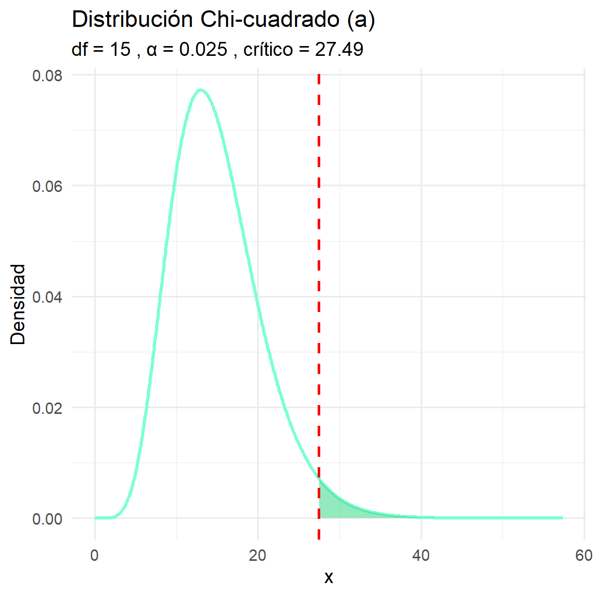
RTA: Para el primer punto, \chi_{0.025}^2 cuando v = 15, el valor crítico es 27.488. Esto significa que existe una probabilidad del 2.5\% (0.025) de que una variable aleatoria chi-cuadrada con 15 grados de libertad tome un valor mayor a 27.488, lo cual es equivalente a que el 97.5\% de los valores acumulados se encuentren por debajo de este punto, expresado matemáticamente como: P(\chi^2 > 27.488) = 0.025 \quad (\text{para } v = 15).
\chi_{0.01}^2 cuando v = 7.
Ver código
b <-qchisq(0.01, df =7, lower.tail =FALSE)b
[1] 18.47531
Grafíca
Ver código
library(ggplot2)# 1. Definición de valores críticos y funcióna <-qchisq(0.025, df =15, lower.tail =FALSE)b <-qchisq(0.01, df =7, lower.tail =FALSE)c <-qchisq(0.05, df =24, lower.tail =FALSE)grafico_chi <-function(df, alpha, critico, titulo){ x <-seq(0, critico + df*2, 0.1) dens <-dchisq(x, df) data <-data.frame(x = x, y = dens)ggplot(data, aes(x, y)) +geom_line(color ="yellow", linewidth =1.2) +geom_area(data =subset(data, x >= critico), aes(x, y), fill ="orange", alpha =0.5) +geom_vline(xintercept = critico, linetype ="dashed", color ="red", linewidth =1) +labs(title = titulo, subtitle =paste("df =", df, ", α =", alpha, ", crítico =", round(critico, 2)), x ="x", y ="Densidad" ) +theme_minimal(base_size =14)}g2 <-grafico_chi(df =7, alpha =0.01, critico = b, titulo ="Distribución Chi-cuadrado (b)")g2
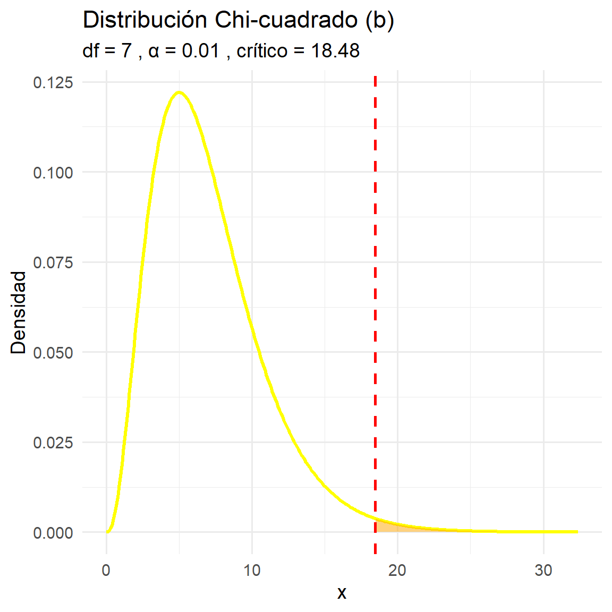
RTA: Para el segundo punto, \chi_{0.01}^2 cuando v = 7, el valor crítico es 18.475. Esto indica que existe una probabilidad del 1\% (0.01) de que una variable aleatoria chi-cuadrada con 7 grados de libertad tome un valor mayor a 18.475, lo cual equivale a que el 99\% de los valores acumulados estén por debajo de este limite, expresado matemáticamente como: P(\chi^2 > 18.475) = 0.01 \quad (\text{para } v = 7).
\chi_{0.05}^2 cuando v = 24.
Ver código
c <-qchisq(0.05, df =24, lower.tail =FALSE)c
[1] 36.41503
Grafíca
Ver código
library(ggplot2)# 1. Definición de valores críticos y funcióna <-qchisq(0.025, df =15, lower.tail =FALSE)b <-qchisq(0.01, df =7, lower.tail =FALSE)c <-qchisq(0.05, df =24, lower.tail =FALSE)grafico_chi <-function(df, alpha, critico, titulo){ x <-seq(0, critico + df*2, 0.1) dens <-dchisq(x, df) data <-data.frame(x = x, y = dens)ggplot(data, aes(x, y)) +geom_line(color ="blue", linewidth =1.2) +geom_area(data =subset(data, x >= critico), aes(x, y), fill ="red", alpha =0.5) +geom_vline(xintercept = critico, linetype ="dashed", color ="red", linewidth =1) +labs(title = titulo, subtitle =paste("df =", df, ", α =", alpha, ", crítico =", round(critico, 2)), x ="x", y ="Densidad" ) +theme_minimal(base_size =14)}g3 <-grafico_chi(df =24, alpha =0.05, critico = c, titulo ="Distribución Chi-cuadrado (c)")g3
RTA: Para el tercer punto, \chi_{0.05}^2 cuando v = 24, el valor crítico es 36.415. Esto representa que existe una probabilidad del 5\% (0.05) de que una variable aleatoria chi-cuadrada con 24 grados de libertad tome un valor mayor a 36.415, lo que significa que el 95\% de los valores acumulados se encuentran por debajo de este punto, expresado matemáticamente como: P(\chi^2 > 36.415) = 0.05 \quad (\text{para } v = 24).
Ejercicio 2.2
Para una distribución chi cuadrada encuentre \chi_\alpha^2 tal que
P(X^2 > \chi_\alpha^2) = 0.99 cuando v = 4;
P(X^2 > \chi_\alpha^2) = 0.025 cuando v = 19;
P(37.652 < X^2 < \chi_\alpha^2) = 0.045 cuando v = 25.
plot_chisq <-function(df, region, alpha =0.05, case ="a") { x <-seq(0, qchisq(0.999, df), length.out =1000) y <-dchisq(x, df) data <-data.frame(x = x, y = y)if (case =="a"| case =="b") { shade <-subset(data, x > region) }elseif (case =="c") {shade <-subset(data, x >37.652& x < region) }ggplot(data, aes(x, y)) +geom_line(color ="purple", size =1) +geom_area(data = shade, aes(x, y), fill ="pink", alpha =0.4) +labs( title =paste("Distribución Chi-cuadrado con v =", df), subtitle =paste("Caso", case, "con región sombreada"), x ="X²", y ="Densidad" ) +theme_minimal()}chi_a <-qchisq(0.01, df =4)plot_chisq(df =4, region = chi_a, case ="a")
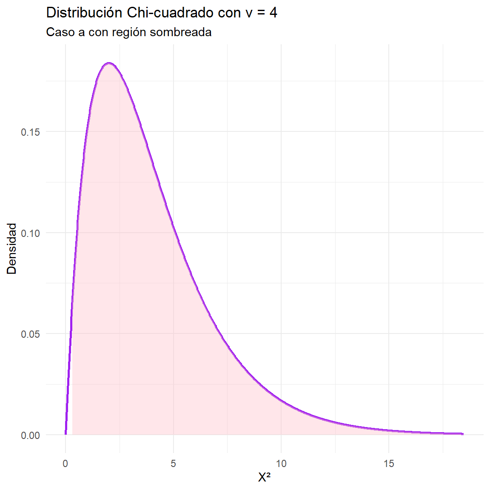
RTA: Para el primer punto, P(X^2 > \chi_\alpha^2) = 0.99 cuando v = 4, el valor crítico buscado es \chi_{0.99}^2 = 0.297. Esto significa que en una distribución chi-cuadrada con 4 grados de libertad, existe una probabilidad del 99\% (0.99) de que la variable aleatoria tome un valor mayor a 0.297, lo cual deja un área acumulada del 1\% a la izquierda, expresado matemáticamente como: P(X^2 > 0.297) = 0.99 \quad (\text{para } v = 4).
chi_b <-qchisq(0.975, df =19)plot_chisq(df =19, region = chi_b, case ="b")
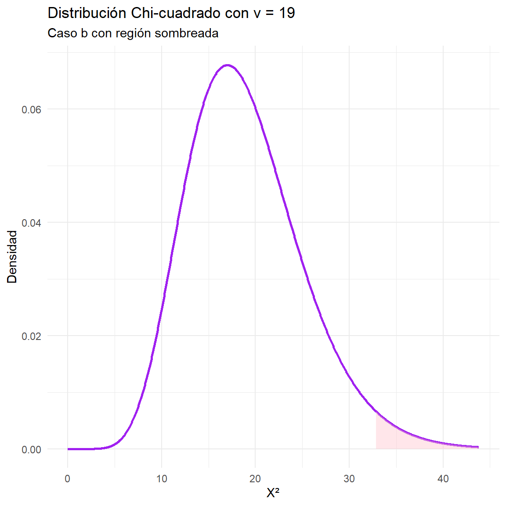
RTA: Para el segundo punto, P(X^2 > \chi_\alpha^2) = 0.025 cuando v = 19, el valor crítico buscado es \chi_{0.025}^2 = 32.852. Esto indica que existe una probabilidad del 2.5\% (0.025) de que la variable aleatoria supere el valor de 32.852 en una distribución con 19 grados de libertad, dejando un área del 97.5\% a la izquierda, expresado matemáticamente como: P(X^2 > 32.852) = 0.025 \quad (\text{para } v = 19).
P(37.652 < X^2 < \chi_\alpha^2) = 0.045 cuando v = 25.
Ver código
qchisq(p_objetivo, df =25)
[1] 46.92392
Grafíca
Ver código
p_left <-pchisq(37.652, df =25)target_prob <- p_left +0.045chi_c <-qchisq(target_prob, df =25)plot_chisq(df =25, region = chi_c, case ="c")
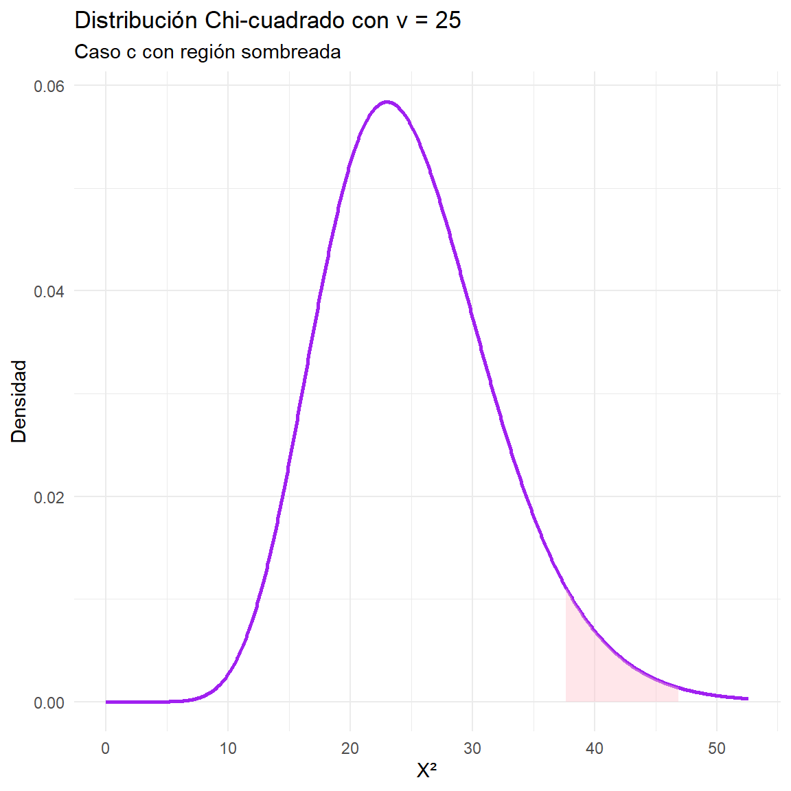
RTA: Para el tercer punto, P(37.652 < X^2 < \chi_\alpha^2) = 0.045 cuando v = 25, dado que la probabilidad a la derecha de 37.652 es 0.05 (ya que \chi_{0.05}^2 = 37.652), el nuevo valor crítico \chi_\alpha^2 debe dejar a su derecha un área de \alpha = 0.05 - 0.045 = 0.005, resultando en \chi_{0.005}^2 = 46.928. Esto significa que en una distribución con 25 grados de libertad, existe una probabilidad del 4.5\% (0.045) de que la variable aleatoria se encuentre en el intervalo entre 37.652 y 46.928, expresado matemáticamente como: P(37.652 < X^2 < 46.928) = 0.045 \quad (\text{para } v = 25).
4 . DISTRIBUCIÓN T DE STUDENT.
La distribución t de Student es una distribución de probabilidad continua que surge al estimar la media de una población normalmente distribuida cuando el tamaño de la muestra es pequeño y la varianza poblacional es desconocida. Fue introducida en 1908 por William Sealy Gosset bajo el seudónimo de Student.
Matemáticamente, si Z es una variable aleatoria con distribución normal estándar N(0,1) y V es una variable con distribución chi-cuadrado con v grados de libertad, independientes entre sí, entonces la variable T = \frac{Z}{\sqrt{V/v}} sigue una distribución t de Student con v grados de libertad.
Principales características
Forma: es simétrica respecto al cero, similar a la normal estándar, pero con colas más pesadas (mayor probabilidad en los extremos).
Parámetro: depende de los grados de libertad (vv); a mayor vv, la distribución se aproxima a la normal estándar N(0,1).
Media: 0 (para v>1v > 1).
Varianza: \frac{v}{v-2} \quad (\text{para } v > 2)
Usos principales
Pruebas de hipótesis sobre medias (prueba t de Student)
Construcción de intervalos de confianza para la medias
Modelar incertidumbre en muestras pequeñas
Familia de Curvas para T de Student
Ver código
set.seed(123)dfs <-c(3, 5, 10) # grados de libertad a mostrarx_range <-seq(-5, 5, by =0.01)df_t <-expand_grid(x = x_range, df = dfs) |>mutate(dens =dt(x, df))ggplot(df_t, aes(x = x, y = dens, color =factor(df), group = df)) +geom_line(size =1) +labs( title ="Familia de curvas t-Student", subtitle ="Diferentes grados de libertad (df)", x ="x",y ="Densidad", color ="df" ) +theme_minimal(base_size =12)
plot_t <-function(df, region =c("left", "right", "between"), value1, value2 =NULL, title ="") { x <-seq(-4, 4, length.out =1000) dens <-dt(x, df) data <-data.frame(x = x, y = dens)if(region =="left"){ data$shade <-ifelse(data$x <= value1, data$y, NA) } elseif(region =="right"){ data$shade <-ifelse(data$x >= value1, data$y, NA) } elseif(region =="between"){ data$shade <-ifelse(data$x >= value1 & data$x <= value2, data$y, NA) }ggplot(data, aes(x, y)) +geom_line(color ="green", size =1) +geom_area(aes(y = shade), fill ="grey", alpha =0.4) +labs(title = title, subtitle =paste("Distribución t con v =", df), x ="t", y ="Densidad") +theme_minimal()}plot_t(df =7, region ="left", value1 =2.365, title ="a) P(T < 2.365), v = 7")
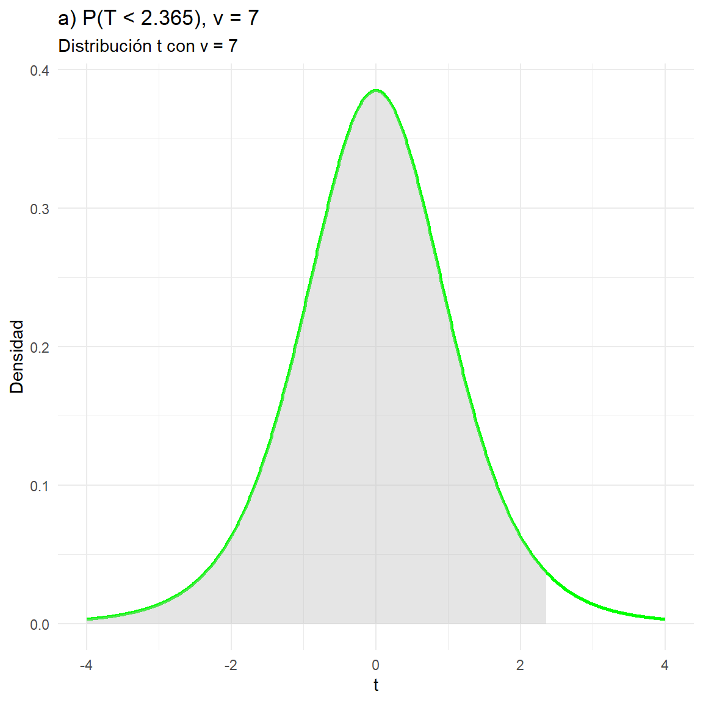
RTA: Para el primer punto, P(T < 2.365) cuando v = 7, la probabilidad obtenida es 0.975. Esto significa que existe un 97.5\% de probabilidad de que una variable aleatoria de la distribución t-Student con 7 grados de libertad tome un valor menor a 2.365, acumulando la mayor parte del área a la izquierda del valor crítico, expresado como: P(T < 2.365) = 0.975 \quad (\text{para } v = 7).
Encuentre P(T > 1.318) cuando v = 24.
Ver código
1-pt(1.318, df =24)
[1] 0.09997295
Grafíca
Ver código
plot_t(df =24, region ="right", value1 =1.318, title ="b) P(T > 1.318), v = 24")
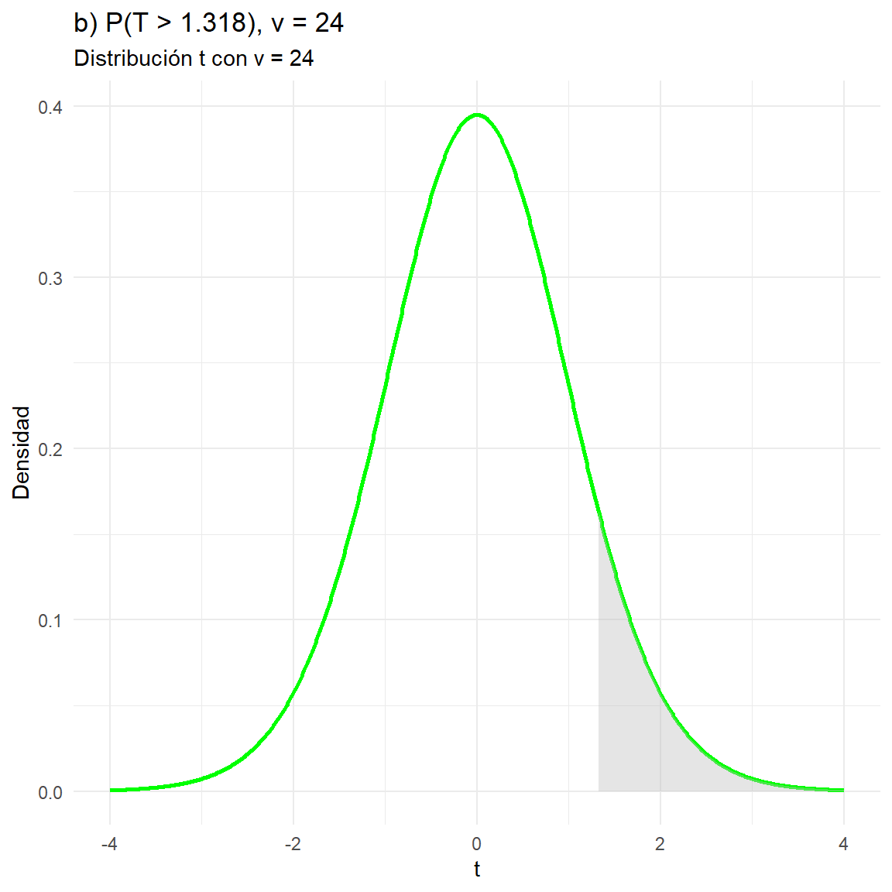
RTA: Para el segundo punto, P(T > 1.318) cuando v = 24, la probabilidad obtenida es 0.10. Esto indica que hay un 10\% de probabilidad de que la variable aleatoria tome un valor superior a 1.318 en una distribución t-Student con 24 grados de libertad, representando el área en la cola derecha superior, expresado como: P(T > 1.318) = 0.10 \quad (\text{para } v = 24).
Encuentre P(-1.356 < T < 2.179) cuando v = 12.
Ver código
pt(2.179, df =12) -pt(-1.356, df =12)
[1] 0.8749748
Grafíca
Ver código
plot_t(df =12, region ="between", value1 =-1.356, value2 =2.179, title ="c) P(-1.356 < T < 2.179), v = 12")
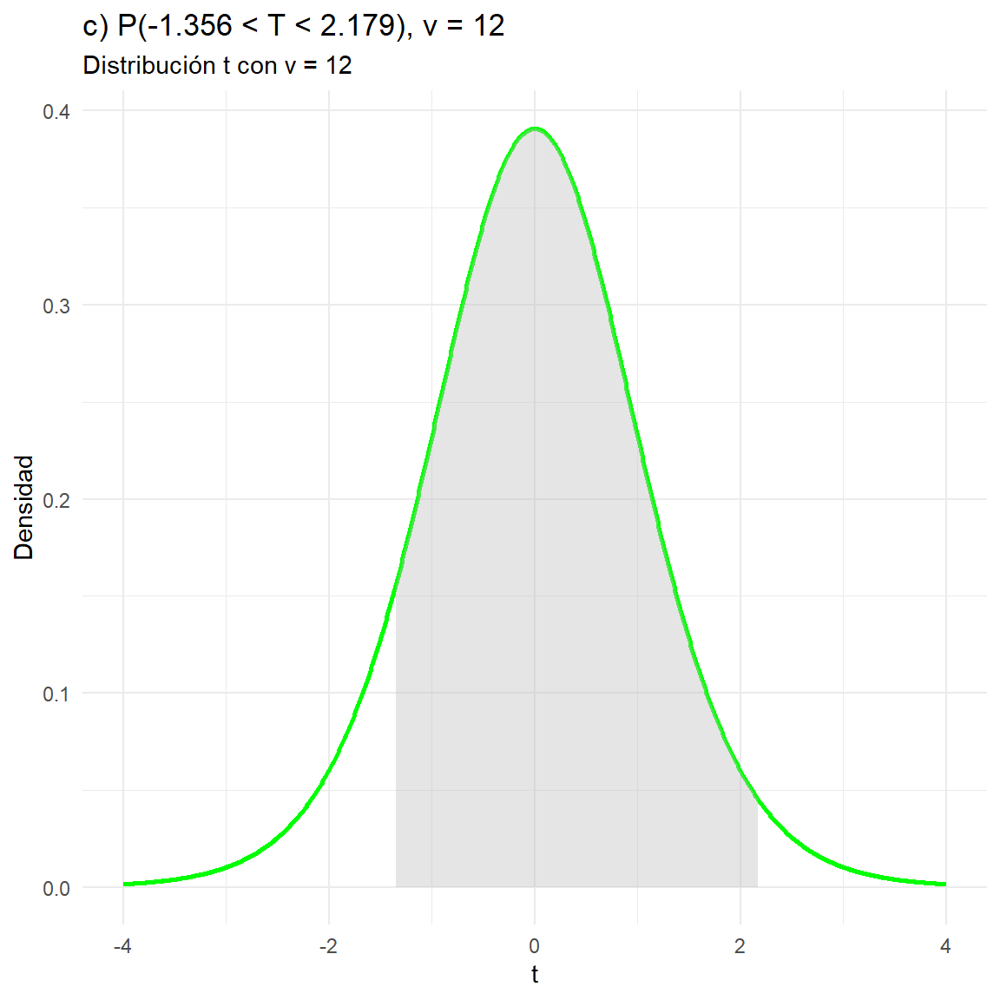
RTA: Para el tercer punto, P(-1.356 < T < 2.179) cuando v = 12, la probabilidad obtenida es 0.85. Esto significa que existe una probabilidad del 85\% de que el valor de la variable aleatoria t-Student con 12 grados de libertad se encuentre dentro del intervalo entre -1.356 y 2.179, expresado como: P(-1.356 < T < 2.179) = 0.85 \quad (\text{para } v = 12).
Encuentre P(T > -2.567) cuando v = 17.
Ver código
1-pt(-2.567, df =17)
[1] 0.9900014
Grafíca
Ver código
plot_t(df =17, region ="right", value1 =-2.567, title ="d) P(T > -2.567), v = 17")
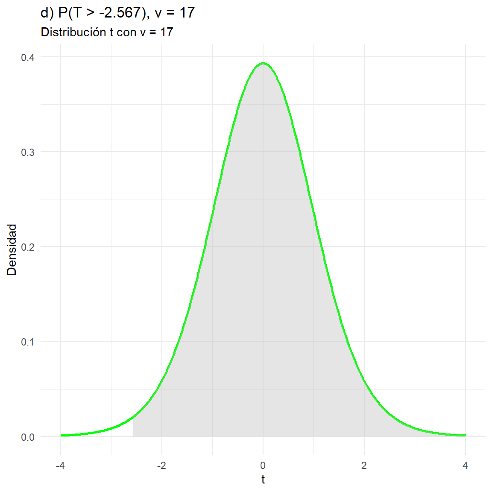
RTA: Para el cuarto punto, P(T > -2.567) cuando v = 17, la probabilidad obtenida es 0.99. Por la simetría de la distribución t-Student, esto equivale a P(T < 2.567), lo que indica que existe un 99\% de probabilidad de que la variable supere el valor de -2.567 cuando se tienen 17 grados de libertad, expresado como: P(T > -2.567) = 0.99 \quad (\text{para } v = 17).
Ejercicio 3.2
Dada una muestra aleatoria de tamaño 24 de una distribución normal, encuentre k tal que:
RTA: Para el primer punto, P(-2.069 < T < k) = 0.965 con v = 23, el valor crítico de la izquierda -2.069 deja una cola inferior de área 0.025 (P(T < -2.069) = 0.025). Por lo tanto, el punto k acumula a su izquierda un área total de 0.025 + 0.965 = 0.990, lo que corresponde a un valor crítico de k = 2.500. Esto significa que existe un 96.5\% de probabilidad de que la variable aleatoria T se encuentre entre -2.069 y 2.500, expresado como: P(-2.069 < T < 2.500) = 0.965 \quad (\text{para } v = 23).
RTA: Para el segundo punto, P(k < T < 2.807) = 0.095 con v = 23, el límite superior 2.807 deja una cola superior de área 0.005 (P(T > 2.807) = 0.005). Para que el área del intervalo sea 0.095, la cola superior a la derecha de k debe sumar 0.005 + 0.095 = 0.10, lo que da como resultado k = 1.319. Esto indica que hay un 9.5\% de probabilidad de que la variable T tome valores en el intervalo comprendido entre 1.319 y 2.807, expresado como: P(1.319 < T < 2.807) = 0.095 \quad (\text{para } v = 23).
P(-k < T < k) = 0.90
Ver código
k_c <-qt(0.95, df = v)k_c
[1] 1.713872
Grafíca
Ver código
plot_c
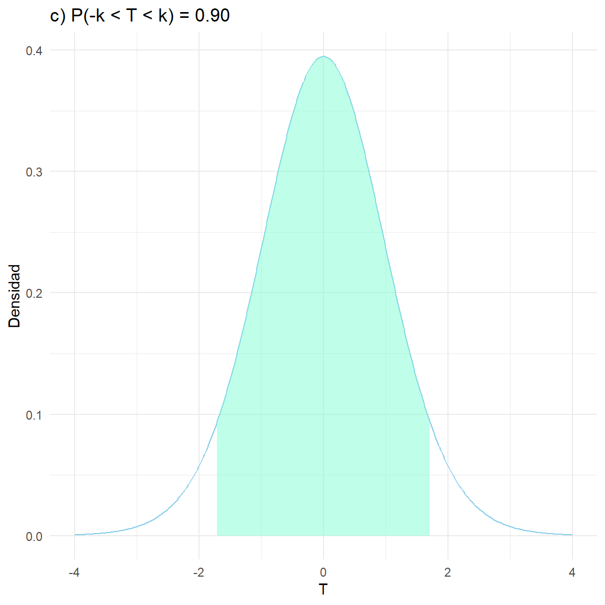
RTA: Para el tercer punto, P(-k < T < k) = 0.90 con v = 23, al tratarse de un intervalo simétrico alrededor de cero, el área central del 90\% (0.90) deja un área del 5\% (0.05) en cada una de las dos colas externas. El valor crítico que deja un área de 0.05 en la cola superior derecha para 23 grados de libertad es k = 1.714. Esto significa que existe un 90\% de probabilidad de que la variable aleatoria T se ubique entre -1.714 y 1.714, expresado como: P(-1.714 < T < 1.714) = 0.90 \quad (\text{para } v = 23).
5 . DISTRIBUCIÓN F DE FISHER
La distribución F, también conocida como F de Fisher-Snedecor, es una distribución de probabilidad continua que surge a partir de la razón entre dos variables aleatorias chi-cuadrado normalizadas por sus grados de libertad.
Definición formal
Si:
X \sim \chi_{v_1}^2 (una chi-cuadrado con v_1 grados de libertad),
Y \sim \chi_{v_2}^2 (otra chi-cuadrado con v_2 grados de libertad), y X y Y son independientes,
entonces la variable:
F = \frac{(X / v_1)}{(Y / v_2)} sigue una distribución F con (v1,v2)(v1,v2) grados de libertad.
Propiedades principales
Soporte: F>0F>0, es decir, solo toma valores positivos.
Asimétrica: la curva de densidad es sesgada a la derecha, especialmente para pocos grados de libertad.
Cuando los grados de libertad son grandes, la distribución F tiende a concentrarse cerca de 1.
Usos más comunes
Análisis de Varianza (ANOVA): se utiliza para contrastar si varias medias poblacionales son iguales.
Pruebas de hipótesis sobre varianzas: por ejemplo, para comparar si dos poblaciones tienen varianzas iguales.
Regresión lineal: la prueba F sirve para evaluar la significancia global del modelo.
Familia de Curvas F de Fisher
Ver código
x <-seq(0, 5, length.out =500)df_combinations <-list(c(1, 5),c(2, 10),c(5, 10),c(10, 20))df <-data.frame()for (df_pair in df_combinations) { v1 <- df_pair[1] v2 <- df_pair[2] dens <-df(x, df1 = v1, df2 = v2) # función de densidad de la distribución F df <-rbind(df, data.frame(x = x, y = dens,label =paste0("v1=", v1, ", v2=", v2)))}ggplot(df, aes(x = x, y = y, color = label)) +geom_line(size =1) +labs(title ="Familia de curvas de la distribución F", x ="x", y ="Densidad",color ="Grados de libertad") +theme_minimal(base_size =14)
# Parámetrosv1 <-7v2 <-15f_crit <-qf(0.05, df1 = v1, df2 = v2, lower.tail =FALSE) # 2.71# Datos para la curvadf_f <-tibble(x =seq(0, 5, length.out =1000)) |>mutate(y =df(x, df1 = v1, df2 = v2))# Datos para el área sombreadadf_shade <- df_f |>filter(x >= f_crit)ggplot(df_f, aes(x = x, y = y)) +geom_area(data = df_shade, aes(y = y), fill ="chartreuse", alpha =0.5) +geom_line(color ="black", linewidth =1) +geom_vline(xintercept = f_crit, color ="red", linetype ="dashed", linewidth =0.8) +annotate("text", x = f_crit +0.5, y =0.15, label =paste0("f[0.05] == ", round(f_crit, 2)), parse =TRUE, color ="red") +annotate("text", x = f_crit +0.6, y =0.04, label ="Área = 0.05", color ="chartreuse") +labs(title =expression(paste("Distribución F con ", v[1] ==7, " y ", v[2] ==15)),subtitle =expression(P(F >2.71) ==0.05),x ="F", y ="Densidad") +coord_cartesian(xlim =c(0, 5)) +theme_minimal(base_size =12)
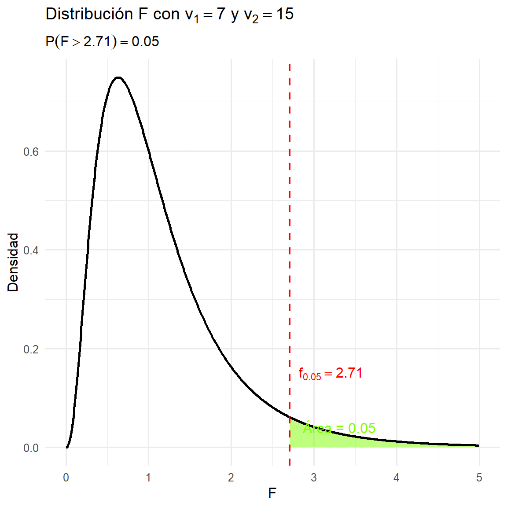
RTA: Para el primer punto, f_{0.05} con v_1 = 7 y v_2 = 15, el valor crítico buscado es f_{0.05}(7, 15) = 2.71. Esto significa que en una distribución F con 7 grados de libertad en el numerador y 15 en el denominador, existe una probabilidad del 5\% (0.05) de que la variable aleatoria tome un valor mayor a 2.71, dejando un área del 95\% a su izquierda, expresado matemáticamente como: P(F > 2.71) = 0.05 \quad (\text{para } v_1 = 7, v_2 = 15).
f_{0.05} con v_1 = 15 y v_2 = 7.
Ver código
# Cálculo de f_0.05 con v1 = 15 y v2 = 7f_val_2 <-qf(p =0.05, df1 =15, df2 =7, lower.tail =FALSE)f_val_2
[1] 3.51074
Grafíca
Ver código
# Parámetrosv1 <-15v2 <-7f_crit <-qf(0.05, df1 = v1, df2 = v2, lower.tail =FALSE) # 3.51# Datos para la curvadf_f <-tibble(x =seq(0, 6, length.out =1000)) |>mutate(y =df(x, df1 = v1, df2 = v2))# Datos para el área sombreadadf_shade <- df_f |>filter(x >= f_crit)ggplot(df_f, aes(x = x, y = y)) +geom_area(data = df_shade, aes(y = y), fill ="lavender", alpha =0.5) +geom_line(color ="black", linewidth =1) +geom_vline(xintercept = f_crit, color ="red", linetype ="dashed", linewidth =0.8) +annotate("text", x = f_crit +0.6, y =0.15, label =paste0("f[0.05] == ", round(f_crit, 2)), parse =TRUE, color ="red") +annotate("text", x = f_crit +0.7, y =0.04, label ="Área = 0.05", color ="lavender") +labs(title =expression(paste("Distribución F con ", v[1] ==15, " y ", v[2] ==7)),subtitle =expression(P(F >3.51) ==0.05),x ="F", y ="Densidad") +coord_cartesian(xlim =c(0, 6)) +theme_minimal(base_size =12)
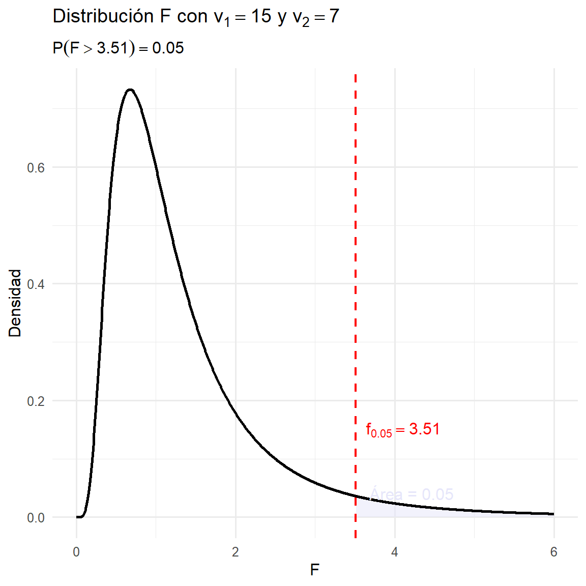
RTA: Para el segundo punto, f_{0.05} con v_1 = 15 y v_2 = 7, al invertir los grados de libertad el valor crítico buscado es f_{0.05}(15, 7) = 3.51. Esto indica que existe una probabilidad del 5\% (0.05) de que la variable aleatoria F supere el valor de 3.51 cuando se tienen 15 grados de libertad en el numerador y 7 en el denominador, expresado matemáticamente como: P(F > 3.51) = 0.05 \quad (\text{para } v_1 = 15, v_2 = 7).
f_{0.01} con v_1 = 24 y v_2 = 19
Ver código
# Cálculo de f_0.01 con v1 = 24 y v2 = 19f_val_3 <-qf(p =0.01, df1 =24, df2 =19, lower.tail =FALSE)f_val_3
[1] 2.924866
Grafíca
Ver código
# Parámetrosv1 <-24v2 <-19f_crit <-qf(0.01, df1 = v1, df2 = v2, lower.tail =FALSE) # 2.92# Datos para la curvadf_f <-tibble(x =seq(0, 5, length.out =1000)) |>mutate(y =df(x, df1 = v1, df2 = v2))# Datos para el área sombreadadf_shade <- df_f |>filter(x >= f_crit)ggplot(df_f, aes(x = x, y = y)) +geom_area(data = df_shade, aes(y = y), fill ="purple", alpha =0.5) +geom_line(color ="black", linewidth =1) +geom_vline(xintercept = f_crit, color ="red", linetype ="dashed", linewidth =0.8) +annotate("text", x = f_crit +0.5, y =0.15, label =paste0("f[0.01] == ", round(f_crit, 2)), parse =TRUE, color ="red") +annotate("text", x = f_crit +0.6, y =0.04, label ="Área = 0.01", color ="purple") +labs(title =expression(paste("Distribución F con ", v[1] ==24, " y ", v[2] ==19)),subtitle =expression(P(F >2.92) ==0.01),x ="F", y ="Densidad") +coord_cartesian(xlim =c(0, 5)) +theme_minimal(base_size =12)
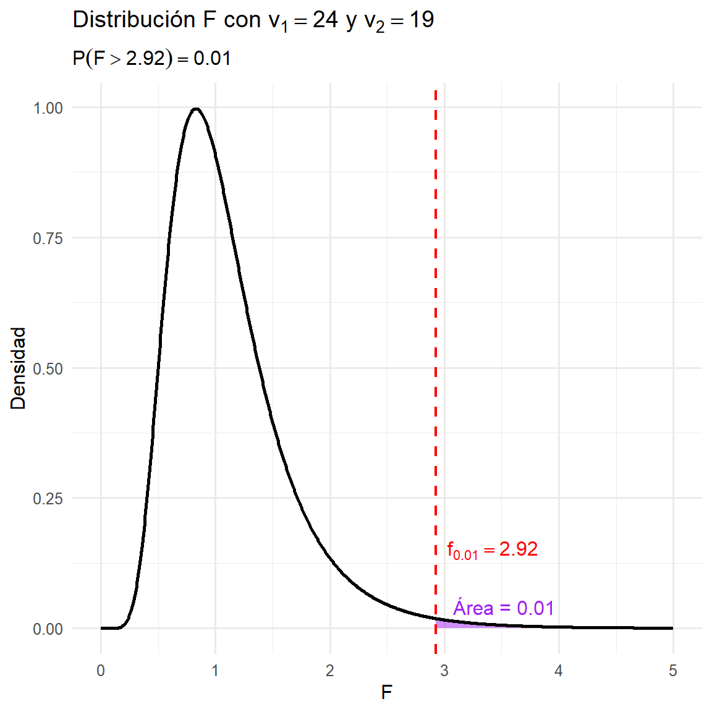
RTA: Para el tercer punto, f_{0.01} con v_1 = 24 y v_2 = 19, el valor crítico que deja un área del 1\% (0.01) en la cola derecha es f_{0.01}(24, 19) = 2.92. Esto significa que con 24 grados de libertad en el numerador y 19 en el denominador, existe solo un 1\% de probabilidad de que la variable F sea mayor a 2.92, expresado matemáticamente como: P(F > 2.92) = 0.01 \quad (\text{para } v_1 = 24, v_2 = 19).
f_{0.95} con v_1 = 19 y v_2 = 24.
Ver código
# Cálculo de f_0.95 con v1 = 19 y v2 = 24f_val_4 <-qf(p =0.95, df1 =19, df2 =24, lower.tail =FALSE)f_val_4
[1] 0.4730049
Grafíca
Ver código
# Parámetrosv1 <-19v2 <-24f_crit <-qf(0.95, df1 = v1, df2 = v2, lower.tail =FALSE) # 0.474# Datos para la curvadf_f <-tibble(x =seq(0, 4, length.out =1000)) |>mutate(y =df(x, df1 = v1, df2 = v2))# Datos para el área sombreada (a la derecha de 0.474, que equivale al 95%)df_shade <- df_f |>filter(x >= f_crit)ggplot(df_f, aes(x = x, y = y)) +geom_area(data = df_shade, aes(y = y), fill ="brown", alpha =0.5) +geom_line(color ="black", linewidth =1) +geom_vline(xintercept = f_crit, color ="red", linetype ="dashed", linewidth =0.8) +annotate("text", x = f_crit +0.5, y =0.20, label =paste0("f[0.95] == ", round(f_crit, 3)), parse =TRUE, color ="red") +annotate("text", x =1.8, y =0.40, label ="Área = 0.95", color ="brown") +labs(title =expression(paste("Distribución F con ", v[1] ==19, " y ", v[2] ==24)),subtitle =expression(P(F >0.474) ==0.95),x ="F", y ="Densidad") +coord_cartesian(xlim =c(0, 4)) +theme_minimal(base_size =12)
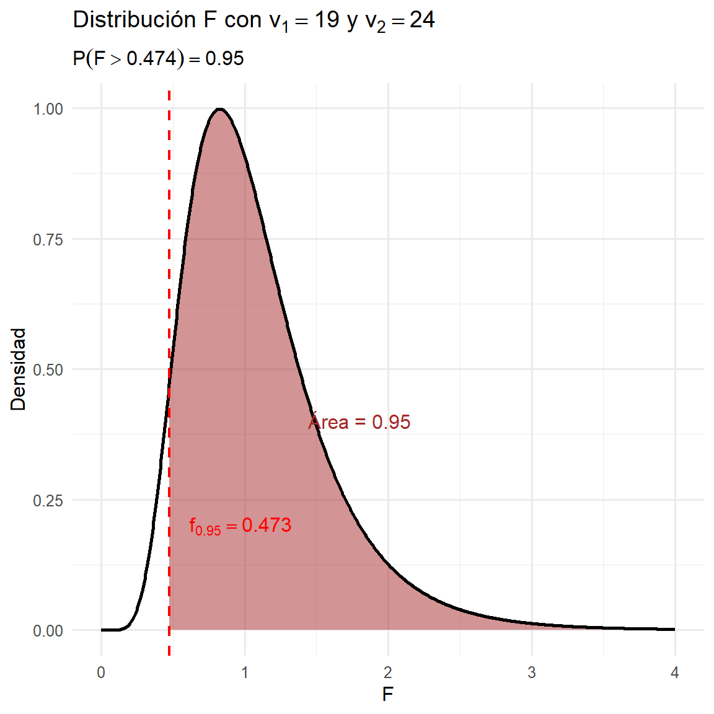
RTA: Para el cuarto punto, f_{0.95} con v_1 = 19 y v_2 = 24, utilizando la propiedad del recíproco f_{0.95}(19, 24) = \frac{1}{f_{0.05}(24, 19)} = \frac{1}{2.11} = 0.474, se obtiene que el valor crítico es 0.474. Esto indica que existe una probabilidad del 95\% (0.95) de que la variable aleatoria sea mayor a 0.474, lo cual deja un área acumulada de solo 5\% a la izquierda, expresado matemáticamente como: P(F > 0.474) = 0.95 \quad (\text{para } v_1 = 19, v_2 = 24).
f_{0.99} con v_1 = 28 y v_2 = 12.
Ver código
# Cálculo de f_0.99 con v1 = 28 y v2 = 12f_val_5 <-qf(p =0.99, df1 =28, df2 =12, lower.tail =FALSE)f_val_5
[1] 0.3453181
Grafíca
Ver código
# Parámetrosv1 <-28v2 <-12f_crit <-qf(0.99, df1 = v1, df2 = v2, lower.tail =FALSE) # 0.345# Datos para la curvadf_f <-tibble(x =seq(0, 4, length.out =1000)) |>mutate(y =df(x, df1 = v1, df2 = v2))# Datos para el área sombreada (a la derecha de 0.345, que equivale al 99%)df_shade <- df_f |>filter(x >= f_crit)ggplot(df_f, aes(x = x, y = y)) +geom_area(data = df_shade, aes(y = y), fill ="coral", alpha =0.4) +geom_line(color ="black", linewidth =1) +geom_vline(xintercept = f_crit, color ="red", linetype ="dashed", linewidth =0.8) +annotate("text", x = f_crit +0.5, y =0.20, label =paste0("f[0.99] == ", round(f_crit, 3)), parse =TRUE, color ="red") +annotate("text", x =1.8, y =0.40, label ="Área = 0.99", color ="coral") +labs(title =expression(paste("Distribución F con ", v[1] ==28, " y ", v[2] ==12)),subtitle =expression(P(F >0.345) ==0.99),x ="F", y ="Densidad") +coord_cartesian(xlim =c(0, 4)) +theme_minimal(base_size =12)
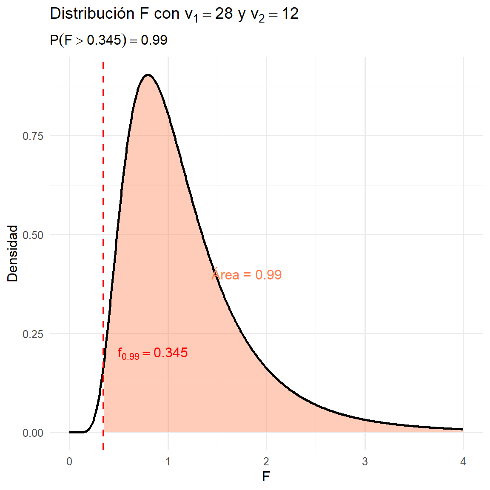
RTA: Para el quinto punto, f_{0.99} con v_1 = 28 y v_2 = 12, aplicando la relación del recíproco f_{0.99}(28, 12) = \frac{1}{f_{0.01}(12, 28)} = \frac{1}{2.90} = 0.345, se determina que el valor crítico es 0.345. Esto significa que con 28 grados de libertad en el numerador y 12 en el denominador, existe un 99\% de probabilidad de que la variable F tome un valor superior a 0.345, dejando un área del 1\% a la izquierda, expresado matemáticamente como: P(F > 0.345) = 0.99 \quad (\text{para } v_1 = 28, v_2 = 12).
6 . TEOREMAS IMPORTANTES
Los teoremas que se presentan a continuación nos permitirán la justificación en la construcción de diferentes intervalos de confianza.
6.1 Teorema 1
Si X \sim N(\mu, \sigma^2) y Y = \frac{(X - \mu)^2}{\sigma^2} entonces:
Y \sim \chi_1^2
Dem: Por teorema de transformación de variables.
6.2 Teorema 2
Si Y_1 \sim \chi_k^2 y Y_2 \sim \chi_v^2 variables aleatorias independientes, entonces:
(Y_1 + Y_2) \sim \chi_{k+v}^2
6.3 Teorema 3
Si X_1, X_2, \dots, X_n son v.a.i.i.d. N(\mu, \sigma^2) entonces:
Si X \sim N(0,1) y Y \sim \chi_v^2 son v.a. independientes y T = \frac{X}{\sqrt{Y / v}}
entonces: T \sim t_v
6.5 Teorema 5
Si X_1, X_2, \dots, X_n son v.a.i.i.d. N(\mu, \sigma^2) y T = \frac{\bar{X} - \mu}{S_{n-1} / \sqrt{n}}
Entonces: T \sim t_{(n-1)}
Dem: (aplicación teorema anterior).
6.6 Teorema 6
Si X \sim \chi_v^2 y Y \sim \chi_k^2 son v.a. independientes y F = \frac{X / v}{Y / k}
entonces: F \sim F_{v,k}
6.7 Teorema 7
Si X_1, X_2, \dots, X_n es una m.a. N(\mu_1, \sigma_1^2) y Y_1, Y_2, \dots, Y_m es una m.a. N(\mu_2, \sigma_2^2) independientes y si F = \frac{S_{n-1}^2 / \sigma_1^2}{S_{m-1}^2 / \sigma_2^2}
Entonces: F \sim F_{(n-1),(m-1)}
7 . TEOREMA DEL LIMITE CENTRAL
El Teorema del Límite Central (TLC) es uno de los conceptos más importantes en estadística. En términos simples, establece que la distribución de la media de una muestra se aproxima a una distribución normal a medida que el tamaño de la muestra aumenta, sin importar la forma de la distribución original de la población.
Concepto y Analogía
Imagina que tienes una población con una distribución extraña, por ejemplo, muy sesgada. Si tomas una sola muestra grande de esa población y calculas su media, esa media se comportará de manera predecible. Si repites este proceso muchas veces, las medias de todas esas muestras formarán un histograma que se parecerá cada vez más a una curva de campana (la distribución normal).
Una analogía popular es la de los dados. La distribución de probabilidad de un solo dado es uniforme (cada número tiene la misma probabilidad). Sin embargo, si lanzas muchos dados y sumas sus resultados, la distribución de esas sumas se aproximará a una campana, con los resultados centrales (la media) siendo mucho más probables que los extremos.
Puntos Clave del Teorema
Forma de la Distribución de Muestreo: La distribución de las medias de la muestra se vuelve normal, sin importar si la población original era normal, sesgada, uniforme o de cualquier otra forma.
Tamaño de la Muestra (n): La aproximación a la normalidad es más precisa a medida que el tamaño de la muestra (n) aumenta. Generalmente, una muestra de n \ge 30 es considerada suficiente para que la aproximación sea válida.
Relación con la Media de la Población: La media de la distribución de muestreo de las medias (\mu_{\bar{x}}) es igual a la media de la población (\mu).
\mu_{\bar{x}} = \mu 4. Relación con la Desviación Estándar de la Población: La desviación estándar de la distribución de muestreo de las medias, llamada error estándar (\sigma_{\bar{x}}), es igual a la desviación estándar de la población (\sigma) dividida por la raíz cuadrada del tamaño de la muestra (n).
\sigma_{\bar{x}} = \frac{\sigma}{\sqrt{n}}
Esto significa que, a medida que el tamaño de la muestra aumenta, el error estándar disminuye, y las medias de las muestras se agrupan más estrechamente alrededor de la media de la población.
Importancia
El Teorema del Límite Central es fundamental porque permite utilizar la distribución normal (que es fácil de trabajar) para hacer inferencias sobre la media de la población, incluso cuando no se conoce la distribución de la población original. Esto es la base para muchas pruebas estadísticas, como los intervalos de confianza y las pruebas de hipótesis.
# Fijar semillaset.seed(123)N <-100000a <-0b <-1poblacion <-runif(N, min = a, max = b)# Histograma de la poblaciónhist(poblacion,probability =TRUE,col ="gold",main ="Distribución de la población (Uniforme)",xlab ="Valores")
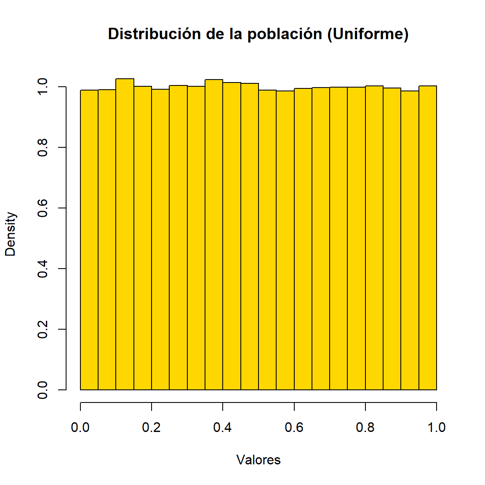
Ver código
n <-30Nsim <-10000medias <-numeric(Nsim)for(i in1:Nsim){ muestra <-runif(n, min = a, max = b) medias[i] <-mean(muestra)}# Histograma de las medias muestraleshist(medias,probability =TRUE,col ="beige",main ="Distribución muestral de la media (TCL)",xlab ="Media muestral")# Parámetros teóricosmu <- (a + b)/2sigma <- (b - a)/sqrt(12)# Curva normal teóricacurve(dnorm(x, mean = mu, sd = sigma/sqrt(n)),col ="red",lwd =2,add =TRUE)
# Fijar semillaset.seed(123)N <-100000# tamaño grande para simular poblaciónsize <-10# número de ensayosp <-0.3# probabilidad de éxitopoblacion <-rbinom(N, size = size, prob = p)# Histograma de la poblaciónhist(poblacion,probability =TRUE,col ="lightgreen",main ="Distribución de la población (Binomial)",xlab ="Valores")
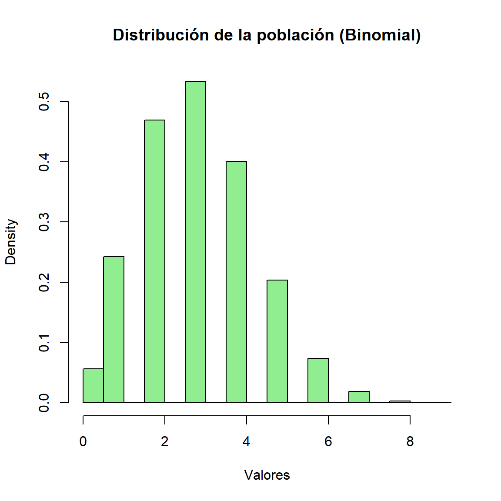
Ver código
n <-30# tamaño de muestraNsim <-10000# número de muestrasmedias <-numeric(Nsim)for(i in1:Nsim){ muestra <-rbinom(n, size = size, prob = p) medias[i] <-mean(muestra)}# Histograma de las medias muestraleshist(medias,probability =TRUE,col ="orange",main ="Distribución muestral de la media (TCL)",xlab ="Media muestral")# Parámetros teóricosmu <- size * psigma <-sqrt(size * p * (1- p))# Curva normal teóricacurve(dnorm(x, mean = mu, sd = sigma/sqrt(n)),col ="red",lwd =2,add =TRUE)